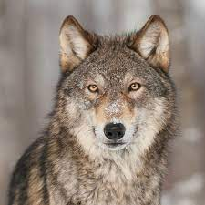
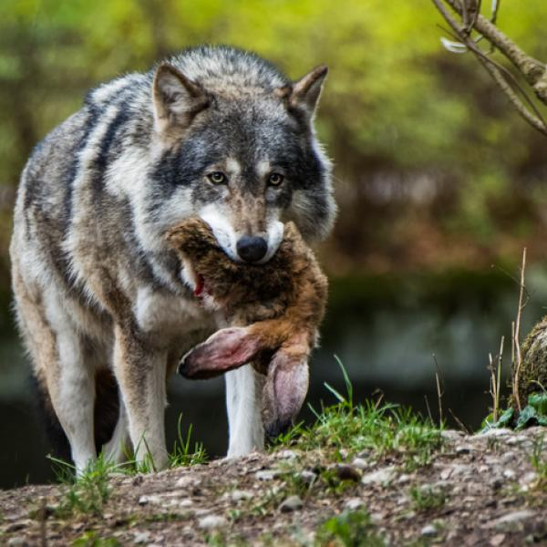
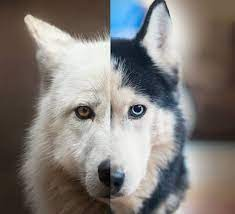

Hábitat
Toda Norteamérica, Japón, Europa occidental, Rusia y la India, contaban con poblaciones de lobos en abundancia. A pesar de ello, de los antes mencionados, solo Rusia continúa manteniendo un elevado número de ejemplares. En América del Norte, ocupan el norte de Groenlandia, varias islas árticas y gran extensión de Canadá. Estados Unidos apenas conserva unas poblaciones fragmentadas y en México se conservan pocos individuos en cautiverio, ya que la caza y la destrucción del hábitat los redujeron a cifras alarmantes. Rusia, China, Kazajistán, Nepal y Mongolia son países con gran presencia de subespecies de lobos. En África y Oriente medio, se conservan de forma fragmentada


Habitos alimenticios
Los lobos se alimentan principalmente de:
- Cerdos
- Ciervos
- Renos
- Caballos
- Ovejas
Lobo vs perro
| Caracteristica | Perro | Lobo |
|---|---|---|
| Cabeza | Proporcionalmente cerca de 20% más pequeña | De mayor tamaño |
| Orejas | Proporcionalmente largas, puntiagudas y usualmente caídas | Proporcionalmente cortas, redondeadas y siempre rectas |
| Cola | Incurvada hacia arriba | Recta |
| Alimentación | Omnívora | Carnívora |
| Reproducción | Maduran rápido, sufren neotenia, pueden reproducirse más de una vez al año | Maduran tarde, no sufren neotenia, se pueden reproducir sólo una vez al año |
